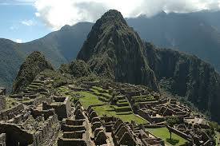
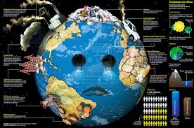
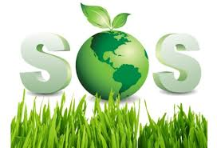
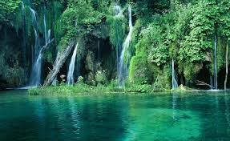

El 22 de abril de cada año se celebra el nacimiento del movimiento ambientalista moderno, el cual se inició en 1970 cuando 20 millones de norteamericanos tomaron las calles, los parques y los auditorios para manifestarse por un ambiente saludable y sustentable
El Día de la Tierra de 1970 logró una coincidencia política que parecía imposible. Ese día condujo a la creación de la Agencia de Protección al Medio Ambiente de Estados Unidos y a la aprobación de leyes relacionadas con el aire limpio, el agua limpia y la conservación de especies en peligro de extincin.
A partir de entonces, cada año en esta fecha, el mundo entero reflexiona y se moviliza por una Tierra mejor Hasta este siglo pocos pensaron que los seres humanos, viviendo en una extensión de tierra aparentemente sin límites y con agua abundante, podrían causar daños irreparables al medio ambiente. Sin embargo hoy los gobiernos y la gente en general en todo el mundo luchan con la erosión costera, los derrames de petróleo y la contaminación del agua potable, en tanto que cuestiones como el crecimiento de la población, la deforestación, la lluvia ácida y la posibilidad de rápidos cambios climáticos significan decisiones difíciles para el futuro.
En 1975 un grupo internacional de estudio reunido en Belgrado, Yugoslavia, propuso un marco de referencia mundial para la educación ambiental, el cual se llamó la "Carta de Belgrado". Esta Carta afirma que la meta de la educación ambiental es hacer que la población mundial se preocupe por el medio ambiente y tenga el conocimiento y la dedicación que la capacite para buscar soluciones a los problemas actuales y prevenir problemas nuevos.
Cuidar del medio ambiente es cuestión de que cada miembro de la sociedad asuma el compromiso de respetar y cuidar su entorno. El pasado 5 de junio se celebro el Día Mundial del Medio Ambiente, fecha propicia para promover en nuestro entorno la importancia de tomar conciencia de la protección de los recursos naturales.Como familia y entes sociales tenemos el gran compromiso de proteger el Medio Ambiente, ya que de esto depende nuestra calidad de vida y la de nuestros sucesores, así como el desarrollo de nuestro país.El medio Ambiente es el conjunto de todas las cosas vivas que nos rodean, de él obtenemos la materia prima que utilizamos para vivir.
Es por esto que cuando atropellamos o hacemos mal uso de los recursos naturales, que tenemos a disposición, lo ponemos en peligro. El aire y el agua ambos indispensables para vivir se están contaminando, por tanto debemos hacer conciencia del uso que les damos. Defender el medio ambiente es parte de nuestro deber, ya que nos convierte en agente dinámico y así fomentamos la cooperación que nos garantizará un mejor futuro y un país más sano.Como familia podemos asumir actitudes tanto individuales como colectivas en defensa del ambiente, buscando soluciones que impidan su contaminación y degradación.
El deterioro en que se encuentra el medio ambiente, exige que asumamos responsabilidades sobre la contaminación ambiental y los peligros que representan para el desarrollo de nuestra sociedad, con la finalidad de contribuir a contrarrestarlos. Compromisos que podemos asumir · Fomentar en nuestros hijos/as la aventura de sembrar un árbol en el entorno. · Participar en actividades relacionadas con la conversación y preservación del ecosistema de país, previendo la deforestación y la contaminación ambiental. · Asumir responsabilidades de protección del medio ambiente, tanto individuales como de forma colectivas. · Analizar críticamente el entorno social y natural, vinculándonos a la problemática del ambiente. · Hacer conciencia sobre la frase “no hagas a otros lo que no te gusta que te hagan a ti”, esto con el objetivo de ver que nuestro entorno está rodeado de seres vivos que sufren nuestra falta de cuidado.
Debemos recordar que cuando hablamos de medio ambiente nos referimos tanto a los aspectos de la naturaleza como plantas, animales, suelo, aire, agua, así como a aspectos propios del ser humano y su cultura: ciudades, industrias, arte, ciencia, etc. Preocuparse del medio hoy, significa preocuparse por lograr mejores condiciones de vida para el ser humano respetando los procesos y componentes naturales del medio.
Dado el estado actual de la contaminaciòn ambiental en nuestro planeta se hace necesario acciones de lucha para combatirla. Esta lucha se puede clasificar en:
Es el conjunto de actividades o acciones que una persona realiza para combatir la contaminación ambiental, entre estas acciones tenemos: 1.- Selecciona la basura de la casa, recicla en basura orgànica e inorgànica 2.- Cambia los focos tradicionales de su hogar por focos ahorradores 3.- Ahorre energia elèctrica,no la desperdicie. Use el cargador del celular solo cuando cargue su movil, apague los focos, los artefactos elèctricos cuando no los utilice. 4.- No use productos contaminantes (plàsticos, productos quìmicos contaminantes como el detergente,etc) 5.- busque productos alternativos para los productos contaminantes que utilice. Ejemplo en vez de utilizar plàsticos para llevar sus compras, usar bolsas de tela. 6.- Ahorre el agua, consumiendo lo necesario, solucionando las fugas, báñandote en el tiempo necesario, cerrando las llaves del agua mientras te enjabonas o afeitas. Ábre el caño sólo para enjuagarte, Coloca una cubeta para recoger el agua fría mientras sale la caliente. Puedes usarla después en la limpieza de la casa, del coche o para regar las plantas. Enjuágate los dientes, después de cepillarte, con un vaso de agua. Riega las plantas durante la noche o muy temprano, cuando el sol tarda más en evaporar el agua. Muchos animales silvestres mueren por haber ingerido bolsas, botellas, colillas u otros objetos tirados por los visitantes. Si prendes una fogata, asegúrate de apagarla perfectamente antes de irte
. Es el conjunto de actividades o acciones que grupo de personas realiza para combatir la contaminación ambiental, entre estas acciones tenemos 1.- Elaborar un memorial a una autoridad para la limpieza de un ligar contaminado. 2.- Realizar una campaña de limpieza y recojo de basura de un lugar contaminado. 3.- Elaborar y repartir volantes de concientización para descontaminar un lugar contaminado. 4.- Elaborar y pegar afiches o carteles concientizando a las personas a no contaminar un lugar contaminado. 5.- Transmitir un programa radial por la descontaminación de un lugar contaminado. 6.- Organizar un mitin o marcha pacífica a la municipalidad de sus localidad buscando acciones concretas para descontaminar un lugar determinado. 7.- Formar círculos, centros de investigación o defensa del medio ambiente.
Es el conjunto de actividades o acciones de parte del gobierno y sus instituciones para combatir la contaminación ambiental, entre estas acciones tenemos 1.- Elaborar leyes, decretos, directivas y demas instrumentos legales para combatir la contaminaciòn ambiental. Ejemplo: ley de proteccion de los bosques, ley de racionalizaciòn del uso del agua,etc 2.- Realizar campañas de concientizaciòn a traves de los medios de comunicaciòn para evitar la contaminaciòn ambiental. 3.- Elaborar proyectos o programas para descontaminar lugares contaminados especìficos. 4.- Establecer sanciones para las empresas y personas que contaminen el medio ambiente.
Cuidemos el Planeta Es muy importante que todos tomemos conciencia de la importancia que tiene cuidar nuestro planeta y nuestros recursos. En esta página, te mostraremos muchos consejos útiles que te servirán para este fin. Utiliza Menos Agua Ahorra agua siempre que puedas. Siempre que puedas, recolecta y reutiliza el agua. Mantén cerrado el grifo mientras no necesites el agua que sale para no desperdiciar el agua. Riega por la mañana o bien tarde para que el agua no se evapore enseguida. Ahorra Energía Eléctrica Apaga las luces. Utiliza bombillas de bajo consumo.
Evita utilizar electrodomésticos y energía innecesariamente. Usa menos el aire acodiciando, los calentadores eléctricos y la calefacción Desconecta los aparatos eléctricos y los electrodomésticos. Aprovechar la luz natural. Contamina Menos Utiliza menos el coche. Siempre que puedas, utiliza el transporte público. Ahorra combustible. Gasta menos gas. Recicla todo lo que puedas Cuida y reutiliza las hojas de papel. Recicla tu basura y todo lo que puedas. Separa la basura. Compra productos reciclados. Evita usar recipientes de aluminio y de plástico. Genera menos desperdicios Utiliza pilas recargables. Evita usar productos desechables. Si tienes que comprar botellas desechables, compra botellas más grandes Evitar utilizar bolsas de plástico cuando puedas utilizar otras. Otros consejos Evita comprar y usar aerosoles Planta un árbol. No tires papeles ni residuos en la calle. No tires el aceite que no sirva por las cañerías.
CAMBIO CLIMATICO Y EFECTOS El clima de la Tierra ha cambiado en muchas ocasiones, sin embargo, nunca antes se había dado un cambio tan drástico y peligroso. Un cambio que afecta a nuestro medioambiente, economía, sociedad, y que es una amenaza para el planeta. Durante el pasado siglo, la temperatura media de la superficie de la Tierra subió aproximadamente 0,6º Celsius. Las pruebas demuestran que la mayoría de los acontecimientos del calentamiento global que han tenido lugar en el planeta en los últimos 50 años han sido causados por la actividad humana.
En su Tercer Informe, publicado en 2001, la Agencia Intergubernamental sobre el Cambio Climático (IPCC, por sus siglas en ingles), pronosticó que la media de temperaturas globales de la superficie subiría entre 1,4 hasta 5,8 ºC para finales de este siglo. El incremento de la temperatura global tendrá consecuencias muy serias para la humanidad y para toda criatura viva, incluyendo una subida del nivel de los mares que será una amenaza para las costas e islas pequeñas, así como el incremento y empeoramiento de los fenómenos meteorológicos. Pero los pronósticos ya se están cumpliendo. El clima está cambiando, empeora.
Los huracanes son más intensos, las lluvias torrenciales, las sequías, las olas de calor, las nevadas... El cambio climático no es una película de ciencia ficción, ya es una realidad. Hace una década, tan sólo era una conjetura, una posibilidad. Ahora el futuro puede ser devastador. Canadá cambia, el hielo del Ártico se derrite, Asia y Sudamérica sufren tormentas e inundaciones históricas. Los glaciares desaparecen, se multiplican los incendios forestales y se suceden olas de calor insoportables... Los científicos lo han comprobado y alertan sobre ello.
Los Climatólogos que mantienen informada a la IPCC advierten que el calentamiento global es causado por la actividad humana y que existe una gran preocupación de que este calentamiento se acelere aún más.
Si se continúa al ritmo actual, aumentaremos las concentraciones de CO2 que hay en la atmósfera, doblando el nivel actual. Probablemente, esto aumentará la temperatura global entre 2 y 5 grados Celsius. Todo ello repercutirá en el deshielo, en los océanos, en el vapor del agua, las nubes, los cambios de vegetación... El impacto en el ecosistema podría ser irreversible.
En vez de tirar un artículo cuando ya no lo puedes usar, ¡recíclalo!. A pesar de que el reciclaje no es perfecto — ya que requiere de energía y los procesos para cambiar algo en otra cosa a menudo producen subproductos no deseados y a veces tóxicos— es mejor que enviar lo que desechaste a los tiraderos de basura o lo que es peor ¡incinerarlos! Es posible reciclar: papel, cartón, vidrio, metales, aluminio, madera, plásticos de los números 1, 2 y 4 (en la parte inferior o posterior del producto viene un número dentro de un triángulo hecho con flechas). Los demás plásticos no se reciclan y mucho menos el número 3 que es PVC o vinil que es altamente tóxico.
Averigua qué materiales pueden ser reciclados en tu localidad. Limpia y clasifica los materiales antes de ponerlos en diferentes cestos. La basura orgánica (cáscaras de frutas, restos de comida, etc.) se puede utilizar para hacer composta o abono. Los recolectores de basura separan la basura y la revenden para reciclaje. Nosotros podemos simplificar esta labor haciendo una buena separación de residuos.
Lo mejor que podemos hacer por el planeta es explotarlo lo menos posible, con un enfoque justo, ético y utilizar sus recursos de manera sustentable. En el centro de la crisis ambiental se encuentra nuestra sociedad consumista. Aquí hay algunas preguntas que puedes hacerte antes de comprar: ¿Es realmente necesario lo que estoy a punto de comprar?, ¿Este producto fue elaborado de manera que no contamine o de manera sustentable?, ¿Durará mucho tiempo?, ¿Contaminará al ser desechado?, ¿Dónde fue fabricado y bajo qué circunstancias?, ¿Fueron usados los materiales para hacerlos reusables o reciclables? ¿Existe un producto similar pero con menos empaques? La idea es que cada uno de nosotros hagamos un consumo razonado, no comprar por comprar sin mirar a quién o a qué podamos dañar.
Debido a que vivimos en una “sociedad desechable”, constantemente somos instados a comprar artículos “nuevos” o “mejorados” aún cuando el que tenemos puede ser reusado o reparado. Cuando compramos, debemos buscar artículos durables y repararlos cuando sea necesario. Así, los bienes de uso durarán mucho tiempo y podrán pasar de generación en generación.
Si algo no es usable para su propósito original, trata de ser creativo y piensa de qué otra forma emplearlo. Si ya no lo necesitas, piensa si alguien más puede utilizarlo
Para la ciudadania es importante tener en cuenta que la contaminacion es un tema importante ya que actualmente hay un exceso conla contaminacion en el pais y no solo hay eso tambien hay afectaciones en el aire ya que hay muchos gases desprendidos de los automoviles,fabricas,quema de basura,la tira de agua,etc.
Por eso es importante no utilizar mucho el transporte,ahorrar agua,separar la basura,no utilizar sprait de cualquier tipo y algo que podemos realizar es obligar a los funconarios publicos que cumplan con los servicion como que pasen por la basura y quetengan buenos tubos donde pase el agua
En mi comunidad no se tira la basura ya que cada jueves de cada semana pasa el carro de la basura si el carro no pasa se les reaiza una llamada de atencon
En mi colonia no se desperdicia el agua ya que si llegara a suceder algo parecido se les realiza una multa dependiendo que cantidades de agua se desperdiciaron y si es que afectaron a terceras personas
En mi colonia no se tienen los servicios adecuados y hay necesidades muy impotantes como el mantenimiento del agua ya que continuamente hay fugas de agua.
Para agradecerle al planeta por los beneficios que nos brinda una vez al año en mi colonia se hace un limpiado extra es decir,todos tienen que limpar sus calles